Sei 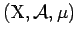 ein Maßraum. Das Integral 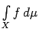 (oder auch mit 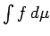 bezeichnet) für meßbare Funktionen f wird schrittweise wie folgt definiert:
f sei eine Elementarfunktion 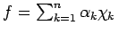, dann setzt man
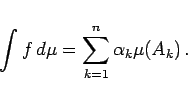
(12.202)
Ist 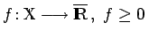, dann setzt man
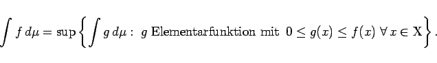
(12.203)
Ist und 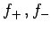 positiver bzw. negativer Teil von , dann setzt man
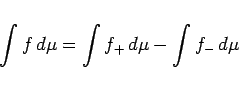
(12.204)
unter der Bedingung, daß wenigstens eines der Integrale auf der rechten Seite endlich ist, um den unbestimmten Ausdruck 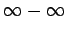 zu vermeiden.
Für eine komplexwertige Funktion 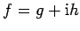 setzt man, falls für die Funktionen g, h die nach (12.204) definierten Integrale endlich sind,
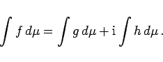
(12.205)
Kann für eine meßbare Menge A und eine Funktion f nach den angegebenen Festlegungen das Integral der Funktion 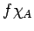 definiert werden, dann setzt man
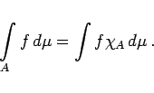
(12.206)
Das Integral einer meßbaren Funktion ist im allgemeinen eine Zahl aus . Eine Funktion nennt man integrierbar oder summierbar über bezüglich , wenn sie meßbar ist und 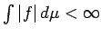 gilt.